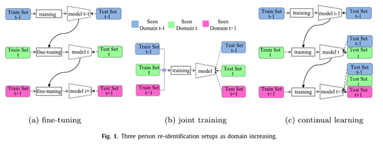
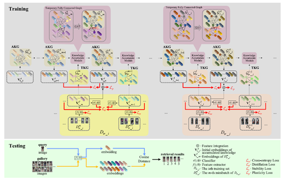
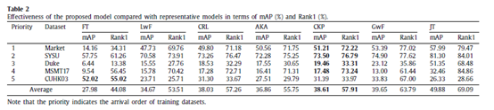
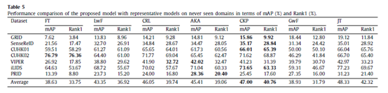

Segmentation of Pericardial Adipose Tissue in CMR Images: a Benchmark Dataset MRPEAT and a Triple-Stage Network 3SUnet
Background
The increased pericardial adipose tissue (PEAT) is associated with a series of cardiovascular diseases (CVDs) and metabolic syndromes. Therefore, particular emphasis should be placed on PEAT quantification and its role in CVD development and progression. In addition, given the more promising clinical value of quantifying PEAT in cardiovascular magnetic resonance (CMR) images than computed tomography (CT) images in CVD assessment, an accurate and time-saving PEAT measurement based on CMR is indispensable.
Motivation
However, almost all existing studies are based on computed tomography (CT) diagnostic modality due to 1) the absence of public CMR datasets, 2) diversity in shape, size and location of PEAT, 3) severe class imbalance , and 4) heavily overlapping in intensity.

Our Contributions
To address the above challenges, we propose a Continual person re-identification model via a Knowledge-Preserving (CKP) mechanism. Our contributions are summarized as follows:
- A fully connected graph is constructed to preserve knowledge extracted from continual learning process and used to guide training.
- A temporary graph, which is also fully connected, is constructed by features extracted from any given training batch.
- The most related knowledge is propagated from the temporary graph to the knowledge preserving graph via a Graph Attention Network (GAT).

More detials are given in our paper!
Experiments
We have conducted experiments on 12 benchmark datasets of person re-identification (Market1501, DukeMTMC, CUHK03, CUHK-SYSU, MSMT17, GRID, SenseReID, CUHK01, CUHK02, VIPER, iLIDS, and PRID). We adopt commonly used evaluation metrics, namely the Rank-1 index and the mean average precision (mAP) to evaluate the performance of our CKP.

